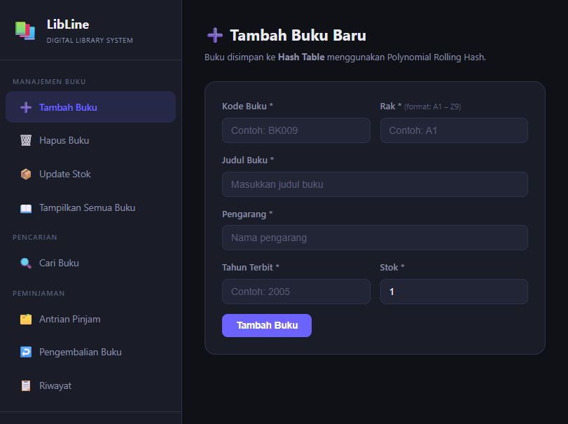

Hi, I'm Ella!
A Computer Science student & AI enthusiast who loves to try and learn some new things in web development, cybersecurity, and love to explore the tech world.
Mood: Sleepy
Current Obsession: Horror Movies
Hey! I'm a CS student at UNEJ who just loves tinkering with code, working with cool people, and figuring out how things work. I like keeping things organized when tackling a problem, but I'm always down to throw around big ideas and learn something totally new. For me, tech is all about building awesome stuff and having fun while doing it!
When I'm not tweaking with code, you can find me hunting for terrifying horror movies, brewing tea, or playing roblox. :3
📂 Selected Works & Projects
A collection of web apps and my experiments.

Web AppLibLine
A simple website for a digital library that allows users to add, edit, delete, search, borrow, and return books.
Kopsmart
A cozy cafe ordering app prototype with warm brown tones, custom bear icons, and order customization.
pencatat jadwal mahasiswa
An interactive Web Audio API synthesizer that plays retro 8-bit cute chime sounds and melodies.
Programming
- C++
- Python
- SQL
- C#
Frontend Dev
- HTML
- JavaScript
- CSS
Design & Craft
- Figma
- Canva